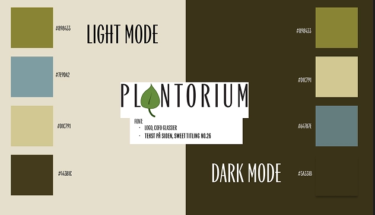
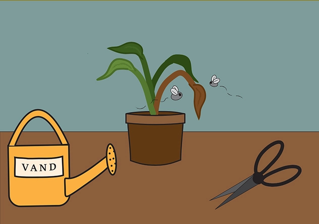

PLANTORIUM
- KLUDRET OPSTART GRUNDET EN UGES SYGDOM.
- LAVET SVG SOM DET FØRSTE GENNEM ADOBE ILLUSTRATION.
- HURTIGT STYLETILE GRUNDET FORKORTET TID.
- FØRSTE BRUG AF JAVASCRIPT, DOG VIRKEDE KUN TO AF ELEMENTERNE.


- AT JAVASCRIPT IKKE GIVER MENING, MEN DET EKSISTERER.
- INTRODUKTION TIL SVG.
- BRUG AF ADOBE ILLUSTRATION.
- DESIGN-KONTRAST MELLEM LIGHTMODE VS. DARKMODE.